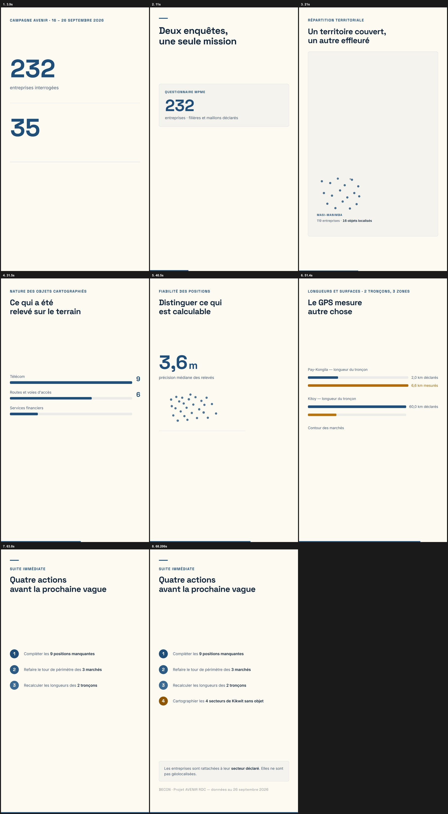

Fiche technique
- Durée
- 70,3 secondes
- Format
- 1080 × 1920 (vertical), 30 images/s, H.264 + AAC
- Voix
- Narration française, sans musique
- Structure
- 7 scènes : volumes · dispositif · territoire · objets · qualité · tronçons et zones · suites
- Chiffres clés
- 232 entreprises · 36 objets · 27 positions · médiane 3,6 m · 6,6 vs 2,0 km · 0,005 à 0,048 ha
Planche de contrôle
Les sept scènes aux moments clés (extraits du rendu).

← Retour à l'accueil du site